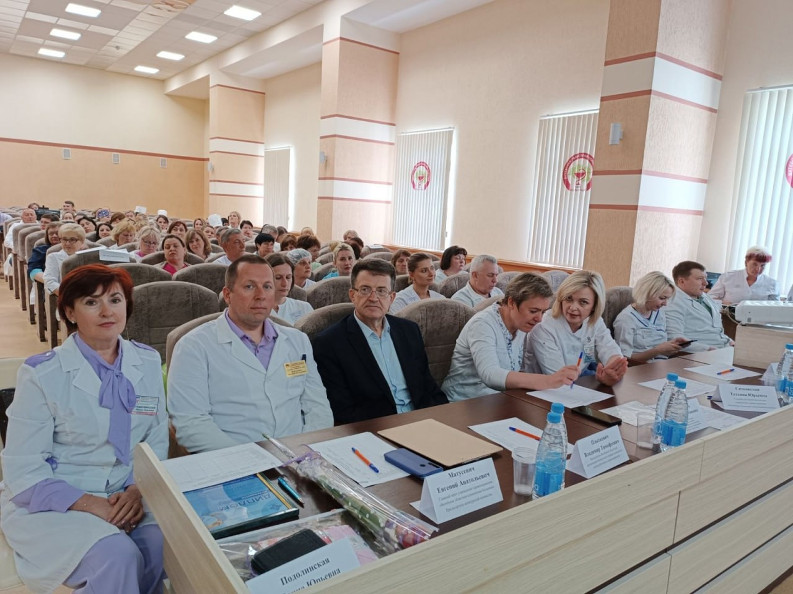

Министерство здравоохранения Республики Беларусь
Учреждение здравоохранения
Витебская областная клиническая больница
Режим работы администрации больницы: 8:00-16:30, обеденный перерыв 12:30-13:00. Выходные дни: суббота, воскресенье
В учреждении возобновлено оказание платных медицинских услуг гражданам. Информацию о платных услугах можно узнать по телефону: +375 (212) 61-62-74
Госпитализация, амбулаторный приём пациентов осуществляется через приёмное отделение больницы.
Справочную информацию о пациентах можно узнать по телефонам: +375 (212) 48-03-06, +375 (212) 61-62-80.
Приём передач осуществляется: 11:00-13:00, 17:00-19:00
Новости
Экскурсия в столицу Беларуси и историко-культурный комплекс “Линия Сталина”
27 мая в преддверии Международного дня защиты детей и начала летних каникул для 100 членов первичной профсоюзной организации Витебской областной клинической больницы и их детей была организована экскурсия в столицу Беларуси и историко-культурный комплекс “Линия “Сталина”.

В Витебской областной клинической больнице состоялся заключительный этап смотра-конкурса профессионального мастерства «Лучший по профессии 2023»
15 мая в Витебской областной клинической больнице состоялся заключительный этап смотра-конкурса профессионального мастерства «Лучший по профессии 2023», посвященный Международному дню медицинской сестры и Году мира и созидания.
В преддверии 78-летия Победы в Великой Отечественной войне в Витебской областной клинической больнице прошла встреча с Зайцевой Верой Егоровной
В Витебской областной клинической больнице прошла встреча с Зайцевой Верой Егоровной, несовершеннолетним узником фашистских концлагерей.
ВПЕРВЫЕ В ВИТЕБСКОМ ГОСУДАРСТВЕННОМ МЕДИЦИНСКОМ КОЛЛЕДЖЕ на бюджетной основе будет осуществляться прием по специальности «Лечебное дело» на основе общего базового образования (после 9 классов), а также по специальности «Сестринское дело» на вечернюю форму получения образования на основе общего среднего образования, профессионально-технического с общим средним образованием